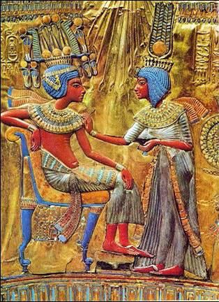

The Midwives - Part 2

Video not playing? Watch on YouTube
Listen to the audioMP3
Source sheet
Zoom chat (11 messages)
- 21:04:32Steven GoldburdAnd now the conclusion….
- 21:22:15Doc Sok(שמות א, כא) ויהי כי יראו המילדות את האלהים ויעש להם בתים רב ושמואל חד אמר בתי כהונה ולויה וחד אמר בתי מלכות מ"ד בתי כהונה ולויה אהרן ומשה ומ"ד בתי מלכות דוד נמי ממרים קאתי דכתיב (דברי הימים א ב, יט) ותמת עזובה (אשת כלב) ויקח לו כלב את אפרת ותלד לו את חור וכתיב (שמואל א יז, יב) ודוד בן איש אפרתי וגו'
- The verse relates the midwives’ reward: “And it came to pass, because the midwives feared God, that He made them houses” (Exodus 1:21). Rav and Shmuel disagree as to the precise interpretation of these houses: One says that God made the houses of the priesthood and the Levites descend from the midwives, and one says that God made the houses of royalty descend from them. The one who says that it is referring to the houses of the priesthood and the Levites is referring to Aaron and Moses, who were sons of Jochebed. And the one who says that it is referring to houses of royalty is referring to David, who also comes from Miriam, as it is written: “And Azubah,” the wife of Caleb, “died, and Caleb took to him Ephrath,
- 21:22:35Doc Sok (דברי הימים א ב, יח) וכלב בן חצרון הוליד את עזובה אשה ואת יריעות ואלה בניה ישר ושובב וארדון בן חצרון (במדבר יג, ו) בן יפנה הוא בן שפנה מעצת מרגלים
- The Gemara discusses the family of Caleb: In Chronicles it says: “And Caleb, the son of Hezron, begot children of Azubah his wife, and of Jerioth, and these were her sons: Jesher, and Shobab, and Ardon” (I Chronicles 2:18). The Gemara asks: Was Caleb actually the son of Hezron? Wasn’t he the son of Jephunneh, as the verse states in Numbers 13:6? The Gemara answers: He was the son of Hezron, but he is called “son of Jephunneh” as an appellation indicating that he was a son who turned away [sheppana] from the counsel of the spies.
- 21:33:09Jacob Zelmanovitzen.wikipedia.org/wiki/Reuvein_Margolies
- 21:33:22Doc SokReuvein Margolies, (Hebrew: ראובן מרגליות) (November 30, 1889 – August 28, 1971) was an Israeli author, Talmudic scholar and head of the Rambam library.
- 21:33:30Doc Sok1971!
- 21:40:16Eli Segelshmuli bed was made very nicely today
- 21:45:22Steven GoldburdThanks, I try
- 21:49:30Steven GoldburdThat's right just look at Rafiki from the Lion King!